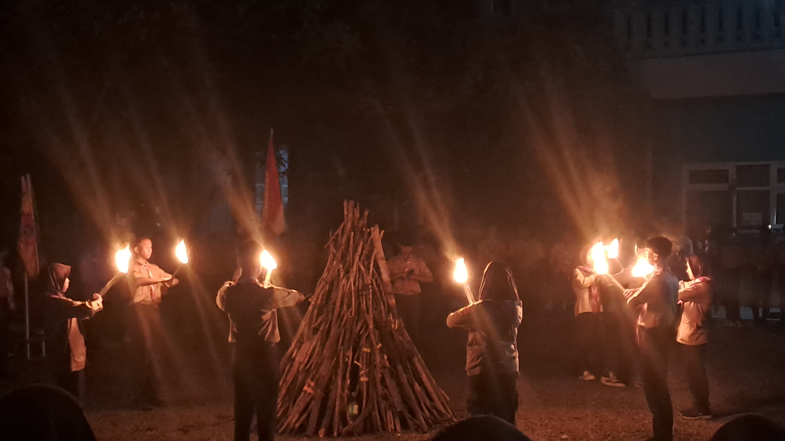
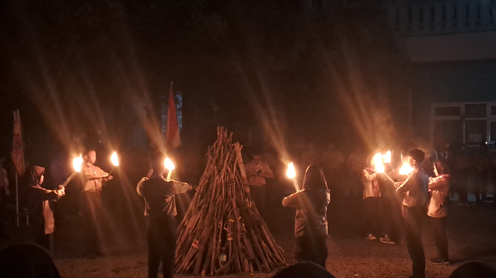
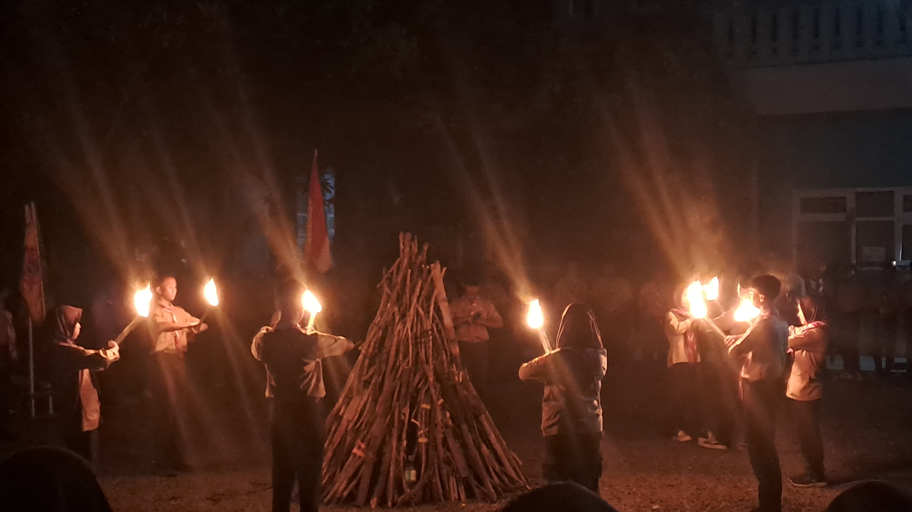

Galeri
Foto Latihan
Foto Perkemahan
Foto Kepemimpinan


 


Pangkalan MA Taqwiyatul Wathon
Gugus Depan 01.241-01.242
Ambalan Arjuna Srikandi merupakan wadah pembinaan bagi Pramuka Penegak di Pangkalan MA Taqwiyatul Wathon Sumberejo Mranggen Demak. Ambalan ini bertujuan membentuk generasi muda yang tangguh, berkarakter, dan memiliki wawasan luas. Kegiatan di Ambalan Arjuna Srikandi meliputi latihan rutin, pelatihan kepemimpinan, dan perkemahan. Setiap kegiatan bertujuan untuk mengembangkan keterampilan, kemandirian, serta menanamkan nilai-nilai kepemimpinan dan kerja sama. Nama "Arjuna" dan "Srikandi" diambil dari tokoh pewayangan yang melambangkan ketangguhan, keberanian, serta semangat juang yang tinggi. Filosofi ini menjadi dasar bagi setiap anggota Ambalan dalam mengembangkan diri dan berkontribusi bagi masyarakat.
Membentuk generasi muda yang tangguh, berkarakter, berwawasan luas, serta memiliki jiwa kepemimpinan dan tanggung jawab sosial yang tinggi.
Latihan rutin dilaksanakan setiap Sabtu pukul 07.00 – 08.30 WIB. Kegiatan ini bertujuan untuk meningkatkan keterampilan dasar Pramuka, seperti baris-berbaris, tali-temali, semaphore, serta pengembangan fisik dan mental.
Perkemahan bertujuan melatih kemandirian, keberanian, dan kerja sama di alam terbuka. Terdiri dari berbagai jenis kegiatan seperti KPTA (Kemah Penerimaan Tamu Ambalan), KOPABA (Kemah Orientasi dan Pelatikan Anggota Baru), KKT (Kemah Kenaikan Tingkat), serta Purna Bakti.
Kegiatan kepemimpinan bertujuan untuk menumbuhkan jiwa pemimpin, meningkatkan rasa tanggung jawab, serta melatih keterampilan mengorganisasi dan bekerja dalam tim.
